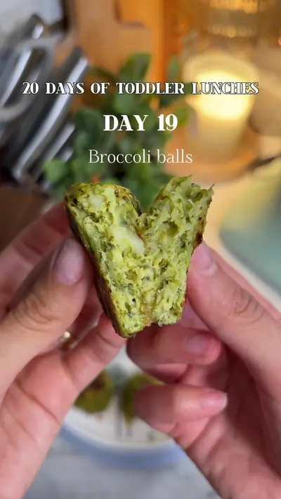

Steam broccoli and potato until soft 2

Ingredients
- 6oz broccoli
- 1 potato
- 1 egg
- 2 tbsp shredded cheese
- 1 tsp olive oil
- 1 tbsp breadcrumbs
- Salt (1 year+)
- ¼ tsp black pepper
- ½ tsp onion powder
Steps
- Steam broccoli and potato until soft
- Mash together in a bowl
- Add egg, cheese, olive oil, breadcrumbs and seasoning and combine well
- Form into small balls and lay on a baking sheet
- Spray with olive oil
- Bake at 360°F for 20 minutes, flipping halfway Serve immediately
Recipe text as written by @soniamazri on TikTok. Open original